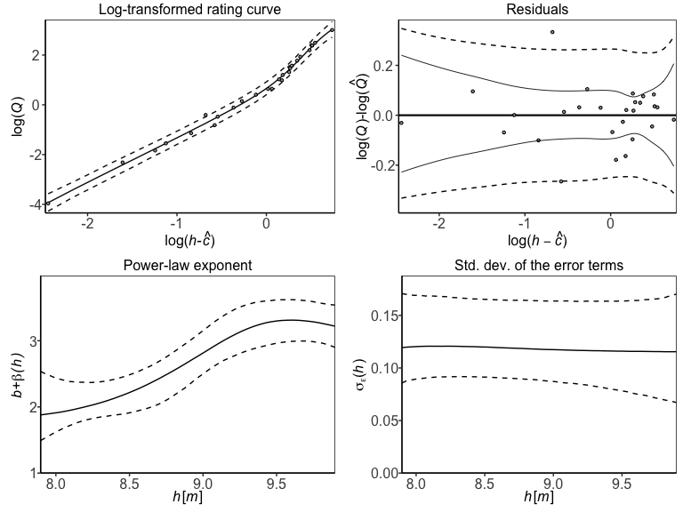

Introduction
Sölvi Rögnvaldsson, Axel Örn Jansson, Rafael Vias and Birgir Hrafnkelsson
Source:vignettes/introduction.Rmd
introduction.RmdA discharge rating curve (drc) is a model that describes the relationship between water stage and discharge in a river. The rating curve is estimated from paired observations of stage and discharge and it’s used to predict discharge for a given stage. This is the main practical usage of rating curves as stage is substantially easier to directly observe than discharge. Four different discharge rating curve models are implemented in this R package using a Bayesian hierarchical model:
plm0() - Power-law model with constant variance (hence the 0). This is a Bayesian hierarchical implementation of the most commonly used discharge rating curve model in hydrological practice
plm() - Power-law model with variance that may vary with stage
gplm0() - Generalized power-law model with constant variance (hence the 0)
gplm() - Generalized power-law model with variance that may vary with stage
For further details about the different models, see x. The models differ in their complexity and the gplm is the most flexible and complex model. We will focus on the use of gplm throughout this introduction vignette and explore the different ways to fit the gplm and visualize its output. However the API of the functions for the other three models are completely identical so this vignette also helps users to run those models.
We will use a dataset from a river called x in Sweden that comes with the package:
> data(kallstorp)
> kallstorp
#> W Q
#> 1 22.398 0.00260
#> 2 22.431 0.01150
#> 3 22.483 0.04800
#> 4 22.486 0.06710
#> 5 22.520 0.16400
#> 6 22.528 0.12000
#> 7 22.541 0.18800
#> 8 22.554 0.19200
#> 9 22.559 0.17300
#> 10 22.585 0.36200
#> 11 22.623 0.40100
#> 12 22.639 0.59000
#> 13 22.642 0.70200
#> 14 22.642 0.67738
#> 15 22.657 0.70357
#> 16 22.660 0.70600
#> 17 22.661 0.70300
#> 18 22.678 0.77400
#> 19 22.689 0.75900
#> 20 22.736 1.63800
#> 21 22.761 1.42800
#> 22 22.761 1.42000
#> 23 22.776 1.89700
#> 24 22.800 1.85200
#> 25 22.813 2.47160
#> 26 22.813 1.94800
#> 27 22.819 2.35200
#> 28 22.833 2.11000
#> 29 22.840 2.59850
#> 30 22.863 2.95200
#> 31 22.870 2.76600
#> 32 22.905 3.59000
#> 33 22.908 3.35000
#> 34 22.945 4.33325
#> 35 22.985 4.88000
#> 36 23.017 5.54200
#> 37 23.043 6.15100
#> 38 23.131 7.04000
#> 39 23.134 7.47900
#> 40 23.209 8.23800
#> 41 23.241 9.18400
#> 42 23.278 9.25100
#> 43 23.290 9.02000
#> 44 23.346 10.28600
#> 45 23.439 10.59400
#> 46 23.440 11.86000
#> 47 23.447 11.85000
#> 48 23.700 15.93000
#> 49 23.810 18.39400
#> 50 23.892 22.60000
#> 51 23.923 22.10000
#> 52 23.924 21.60000Fit a discharge rating curve
It is very simple to fit a discharge rating curve with the bdrc package. All you need are two mandatory input arguments, formula and data. The formula is of the form y~x where y is discharge in \(m^3/s\) and x is stage in \(m\) (it is very important that the data is in the correct units). data is a data.frame which must include x and y as column names. In our case, in kallstorp, a column named Q includes are discharge measurements and W the stage measurements. We are ready to fit a drc using the gplm function:
gplm returns an object of class “gplm” which we can summarise and visualize using familiar functions such as
> summary(gplm.fit)
#>
#> Formula:
#> Q ~ W
#> Latent parameters:
#> lower-2.5% median-50% upper-97.5%
#> a 9.85 10.43 11.15
#> b 1.83 1.84 1.84
#>
#> Hyperparameters:
#> lower-2.5% median-50% upper-97.5%
#> c 22.3412 22.358 22.37
#> sigma_beta 0.2714 0.517 1.07
#> phi_beta 0.3486 0.735 1.50
#> sigma_eta 0.0302 0.450 1.01
#> eta_1 -4.7614 -4.097 -3.15
#> eta_2 -5.8917 -4.215 -2.91
#> eta_3 -7.6541 -5.730 -3.56
#> eta_4 -9.2395 -6.831 -3.73
#> eta_5 -9.9079 -7.095 -3.69
#> eta_6 -10.4610 -7.208 -3.51
#>
#> DIC: -36.68229and

We will dive deeper into visualizing the “gplm” object in the next sections.
Visualizing posterior distributions of different parameters
The bdrc package provides several tools to visualize the results from the drc model and can give insight into the physical properties of the river at hand. For instance, the hyperparameter \(c\) corresponds to the stage of zero discharge. To visualize the posterior of \(c\), we can write
 Since \(c\) is a strictly positive parameter, it is transformed during Bayesian inference s.t. it has support on the real line with \(\zeta=log(h_{min}-c)\). To plot the transformed posterior we write
Since \(c\) is a strictly positive parameter, it is transformed during Bayesian inference s.t. it has support on the real line with \(\zeta=log(h_{min}-c)\). To plot the transformed posterior we write
 the param argument can also be a vector of different parameter names. To visualize the posterior distribution of many parameters at once we can for instance write
the param argument can also be a vector of different parameter names. To visualize the posterior distribution of many parameters at once we can for instance write
 There is a shorthand to visualize all hyperparameters at once
There is a shorthand to visualize all hyperparameters at once
 Similairily, writing ‘latent_parameters’ plots the latent parameters in one plot. To plot the hyperparameters transformed, on the same scale as in the Bayesian inference, we write
Similairily, writing ‘latent_parameters’ plots the latent parameters in one plot. To plot the hyperparameters transformed, on the same scale as in the Bayesian inference, we write

Finally, we can visualize certain components of the drc models that may vary with stage, the power-law exponent \(f\) and the standard deviation on the data level \(\sigma_{\varepsilon}\). gplm0 and gplm generalize the power law exponent, model it as a function of stage \(f(h)=b+\beta(h)\), while in plm and plm model the exponent is a fixed constant \(f(h)=b\). We can plot the exponent with
 plm and gplm model the standard deviation, \(\sigma_{\varepsilon}\) on the data level as a function of stage, namely as a linear combination of B-splines functions, while plm and gplm0 model the variance is a fixed constant. We can plot the standard deviation by writing
plm and gplm model the standard deviation, \(\sigma_{\varepsilon}\) on the data level as a function of stage, namely as a linear combination of B-splines functions, while plm and gplm0 model the variance is a fixed constant. We can plot the standard deviation by writing

Assessing model fitness and convergence
The package has several functions for convergence diagnostics of a bdrc model, most notably the residual plot, tracing plots, autocorrelation plot and the Gelman-Rubin statistic. The residuals are presented as a function of \(log(h-c)\) as the model is linear (or generalized linear) on that scale.
 The traceplots are most meaningful on the transformed scale. To plot a trace plot for a single parameter, write
The traceplots are most meaningful on the transformed scale. To plot a trace plot for a single parameter, write

To plot a trace plot for all hyperparameters, you write similiarily as above

To assess the mixing and convergence of the MCMC chains for each parameter, you can visualize \(\hat{R}\) as presented by Gelman and Rubin with:
 And finally autocorrelation of parameters can be assessed with
And finally autocorrelation of parameters can be assessed with

Customization of models
There are ways to customize the gplm further. In some instances, the parameter of zero discharge, \(c\), is known and then you want to fix that parameter to the known value in the model. In addition you might want to extrapolate the rating curve to higher stage values by adjusting the maximum stage. Assume 22.35 m is the known value of \(c\) and you want to calculate the rating curve for stage values up to 24 m, then your function call would look like this
> gplm.fit.known_c <- gplm(Q~W,kallstorp,c_param=22.35,h_max=24)
> summary(gplm.fit.known_c)
#>
#> Formula:
#> Q ~ W
#> Latent parameters:
#> lower-2.5% median-50% upper-97.5%
#> a 9.79 10.33 10.99
#> b 1.83 1.84 1.84
#>
#> Hyperparameters:
#> lower-2.5% median-50% upper-97.5%
#> sigma_beta 0.3280 0.593 1.164
#> phi_beta 0.3752 0.806 1.607
#> sigma_eta 0.0142 0.431 0.964
#> eta_1 -4.8304 -4.166 -3.222
#> eta_2 -5.8405 -4.189 -2.867
#> eta_3 -7.6151 -5.665 -3.386
#> eta_4 -9.0831 -6.736 -3.454
#> eta_5 -9.9050 -7.025 -3.347
#> eta_6 -10.3827 -7.151 -3.098
#>
#> DIC: -37.27221one neat way to geta visualization summary of your model is to use the ‘collage’ option in the plot method:

Prediction for an equally spaced grid of stages
To get rating curve predictions for an equally spaced grid of stage values, you can use the predict function. Note that only values in the range from \(c\) and h_max are accepted, as that is the range in which the Bayesian inference was performed
> h_grid <- seq(22.35,24,by=0.01)
> rating_curve_h_grid <- predict(gplm.fit.known_c,newdata=h_grid)
> print(rating_curve_h_grid)
#> h lower median upper
#> 1 22.35000 0.000000000 0.000000000 0.000000000
#> 2 22.39800 0.001938307 0.002687651 0.003812095
#> 3 22.43100 0.009489474 0.012541006 0.016843666
#> 4 22.44833 0.016931072 0.022329100 0.029623629
#> 5 22.46567 0.027638117 0.036467937 0.047486771
#> 6 22.48300 0.042524356 0.055769934 0.072624429
#> 7 22.48600 0.045747028 0.059628073 0.078116708
#> 8 22.52000 0.090245077 0.117086386 0.151678693
#> 9 22.52800 0.104441254 0.134668508 0.174042634
#> 10 22.54100 0.129322162 0.167484035 0.214665933
#> 11 22.55400 0.158357456 0.203552119 0.261634671
#> 12 22.55900 0.170372526 0.218820137 0.281670966
#> 13 22.58500 0.243144616 0.312253558 0.396770887
#> 14 22.62300 0.381527359 0.486704611 0.616968409
#> 15 22.63900 0.452687533 0.574468388 0.729695673
#> 16 22.64200 0.467973670 0.591963634 0.747375013
#> 17 22.65700 0.541359385 0.686349560 0.865639649
#> 18 22.66000 0.557591385 0.706413128 0.889937567
#> 19 22.66100 0.562261305 0.713562170 0.897028424
#> 20 22.67800 0.660850414 0.830708826 1.043620362
#> 21 22.68900 0.726102631 0.913347041 1.150969777
#> 22 22.73600 1.057796487 1.320250554 1.651172476
#> 23 22.76100 1.272714600 1.567664971 1.959459185
#> 24 22.77600 1.393550162 1.735845738 2.142988444
#> 25 22.80000 1.637907076 2.010899594 2.482866403
#> 26 22.81300 1.769430467 2.177138447 2.670369546
#> 27 22.81900 1.836884895 2.254558371 2.779452314
#> 28 22.83300 1.985196482 2.431536720 2.996880316
#> 29 22.84000 2.057357200 2.523380983 3.093277067
#> 30 22.86300 2.330018999 2.849384276 3.485492329
#> 31 22.87000 2.416862293 2.956131106 3.607440572
#> 32 22.90500 2.867193013 3.473291694 4.222810371
#> 33 22.90800 2.881014805 3.524585297 4.264644328
#> 34 22.94500 3.393751360 4.112475064 4.987977869
#> 35 22.98500 3.944106752 4.772898794 5.755248858
#> 36 23.01700 4.384676383 5.300101794 6.363340611
#> 37 23.04300 4.751774775 5.735997234 6.889097442
#> 38 23.07233 5.154461393 6.209648279 7.420433977
#> 39 23.10167 5.569758642 6.692519349 7.999317034
#> 40 23.13100 5.979147459 7.164536294 8.553321121
#> 41 23.13400 6.011766914 7.187321523 8.576638048
#> 42 23.15900 6.346225825 7.587704360 9.024298858
#> 43 23.18400 6.646606228 7.971255594 9.433058079
#> 44 23.20900 6.981461867 8.337537680 9.903941133
#> 45 23.24100 7.424958731 8.792955248 10.423580581
#> 46 23.27800 7.888108664 9.317413882 11.166005850
#> 47 23.29000 8.039671525 9.494154393 11.324069802
#> 48 23.30867 8.228344201 9.738333652 11.611399483
#> 49 23.32733 8.451608665 10.011851715 11.890597201
#> 50 23.34600 8.710757057 10.269785078 12.269715101
#> 51 23.37700 9.110288749 10.695531447 12.812309558
#> 52 23.40800 9.489458877 11.136448076 13.351689229
#> 53 23.43900 9.877039305 11.589771809 13.881492804
#> 54 23.44000 9.826419640 11.596762356 13.963965736
#> 55 23.44700 9.955426739 11.703505694 14.001784049
#> 56 23.48314 10.436228159 12.237557604 14.663926483
#> 57 23.51929 10.899423829 12.811663876 15.426587075
#> 58 23.55543 11.406018916 13.403900376 16.121706483
#> 59 23.59157 11.942448859 14.023908321 16.867063899
#> 60 23.62771 12.485662927 14.693567368 17.704017010
#> 61 23.66386 13.060130205 15.399725178 18.426551106
#> 62 23.70000 13.752849586 16.179151394 19.330109755
#> 63 23.72750 14.224442931 16.769483925 20.099714682
#> 64 23.75500 14.788441309 17.430316898 20.797868476
#> 65 23.78250 15.388298929 18.094287303 21.423714287
#> 66 23.81000 15.909156932 18.824500648 22.313438023
#> 67 23.83733 16.507315484 19.572389478 23.232347491
#> 68 23.86467 17.140407202 20.356455190 24.020845602
#> 69 23.89200 17.781373016 21.171009441 24.942686767
#> 70 23.92300 18.448481286 22.130473099 26.195553910
#> 71 23.92400 18.440836910 22.115399024 26.150160011
#> 72 23.94933 19.030940198 22.955150538 27.215642523
#> 73 23.97467 19.488329044 23.746664503 28.200698342
#> 74 24.00000 20.016072785 24.530560816 29.751704447